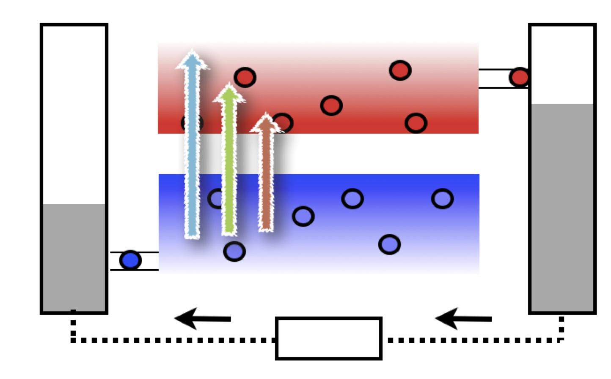

Research interests
Efficiency and cost drive photovoltaic research. During my PhD I worked on a novel optical concentrator with the aim of reducing cost. Then during my postdoc I switched gears and looked at what is ultimately possible in terms of high efficiency. Below I briefly discuss my experience in these areas.
Luminescent solar concentrators
Key Contributions
- The first quantum dot based luminescent concentrator tandem
- State of the art optical Monte-Carlo model: PVTrace.
One purely optical approach to the reduction of costs is the Luminescent Solar Concentrator (LSC).
Cost reduction is achieved by replacing the light harvesting area of conventional solar panels by low-cost, planar luminescent waveguides. A small strips of solar cells are attached to the edges therefore reducing the cost of the whole device.
What I call ‘first generation’ luminescent concentrators were devised in the late 1970s and offered realistic savings when the cost-per-Watt of flat-plate silicon was ~30$/W. Research into LSCs has continued to the present day; focusing on how new materials such as colloidal nano-structures and photonic structures can augment traditional designs. However, the best of these structures are still only capable of transporting ~10% of incident photons to the cells. In these devices, photon transport towards the cells is severely hindered by multiple reabsorption events that redirect photons out of waveguide modes, and limit devices to low efficiency.
Research interests are now focusing on ‘second generation’ approaches, which attempt to enhance the optical transport, and should enable high power conversion efficiency at low cost, provided the optical properties can be pushed to the limit. If this is achieved, the theoretical efficiency limits of luminescent concentrators are the same as conventional solar cells, ~30%.
Hot-carrier solar cells
Key Contributions
- Rate model for the hot-carrier solar cell
- Perturbation theory analysis of cooling.
The hot-carrier solar cell is one of the most ambitious attempts at making the ultimate photovoltaic converter. It has the potential to reach 84% power conversion efficiency.
In this concept, thermalisation losses are eliminated using a mechanism which prevents charge carriers from interacting with the lattice. Energy that would otherwise transfer to the lattice, and be lost, is stored in the carrier population as excess heat. In theory this enables very high conversion efficiency because a low bandgap material can be chosen to maximise absorption across the spectrum, and yet still achieve high voltage per carrier.
The good voltage performance is achieved using 'energy selective contacts' (the 'pipes' that extract the electrons from the conduction band and holes from the valence band in the diagram). These contacts play two crucial roles: (1) they prevent the hot-carrier population from being cooled when in contact with the metal electrodes, and (2) the voltage of the solar cell is determined by the energy separation between the electron and hole contact. Thus the hot-carrier solar cell can achieve the best of both worlds: a high current by using a low bandgap absorber, and a high voltage from using energy selective contacts.
To better understand the current/voltage trade off that occurs in conventional solar cells, and how this can be improved by using hot-carrier, try the Quantum of Sol Web App (Firefox or Safari is needed.).
Follow me here...

Luminescent solar concentrators.

The hot-carrier solar cell.